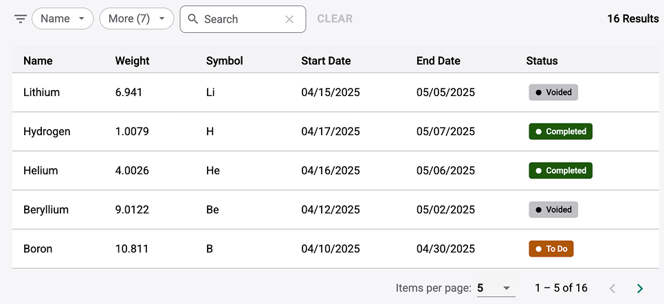
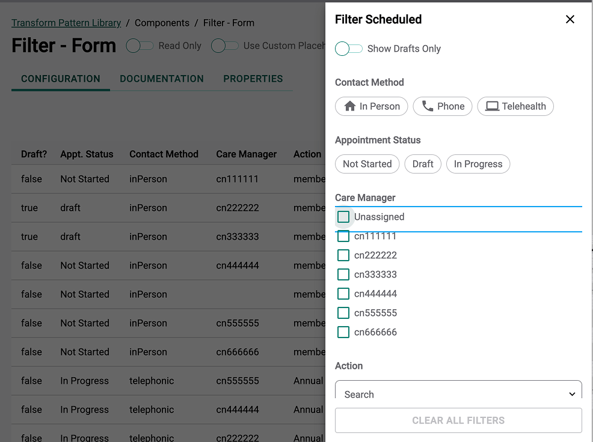

A Smart Filtering Component for Complex Data
TruCare Cloud is a data-dense platform where nearly every workflow relies on interacting with large datasets—especially through tables. But across teams, filtering had become a pain point. Each group had built their own version of filters, often inconsistent and fragile. As the UX architect on the design system, I recognized the opportunity to create a single, reusable filtering component—one powerful enough to support healthcare data, and flexible enough for widespread use.

Caption - Filter Group
The current filter group is a bar oriented interface that allows users to filter data in a table. It is responsive, and highly configurable.I kicked off discovery workshops to align across teams—product, engineering, and fellow designers. We mapped out the use cases and uncovered just how fragmented filter implementations had become. Some were limited to basic dropdowns, others had no keyboard support, and several required entirely different layouts depending on the context. From these sessions, I defined key requirements: flexible configuration, accessibility-ready markup, performance, and adaptability across UI types (toolbars, panels, modals, and more).
“Design systems should seek to solve business problems. Not design buttons.”
Our MVP started small: just a few core filter types—single select, multiselect, and date filters. But I designed the system with modularity in mind. Each filter tile could be dynamically rendered and reordered. Over time, the component evolved into a smart wrapper: teams could define the filter structure via configuration, and the logic and display would adapt accordingly. This allowed developers to implement complex filters without reinventing the wheel—and enabled designers to prototype real-world flows using the exact same logic.

Caption - Filter Panel
The filter panel shares all of the same logic, but allows for more advanced filtering and flexibility in placement. Additional filters can easily be added with no limits. In this case it uses a responsive overlay panel, but can be used in any scenario.I also pushed the filtering component beyond Figma, using live prototyping tools like StackBlitz to test edge cases and explore layout behaviors that were difficult to communicate in static design files. This accelerated decision-making and helped product teams visualize how filters would work in complex table states or in-progress flows. Developers appreciated the clarity, and the hands-on demos helped us tighten requirements without ambiguity.
As adoption grew, the ROI became clear. Dozens of teams implemented the filtering component across their pages. It not only ensured consistency and reduced time spent on filter logic—it also gave users a predictable, scalable experience when working with data. Teams no longer needed to worry about the UI for filters—they could focus on what filters were most meaningful to their workflows.
This project was a turning point for our design system. It proved that the value of a system isn’t just in the visual elements—it’s in solving shared problems at scale. By investing early in collaboration, shaping the right abstractions, and prototyping in real code, we delivered a component that saved time, reduced confusion, and improved user experience. One filter component, dozens of use cases, and a more cohesive platform as a result.